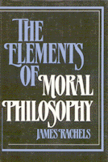

<body bgcolor="#FFFFFF" text="#000000" link="#0000FF" vlink="#CC0000" alink="#CC0000"><center><hr width="350" size="1" align="center" noshade>A lively, readable, and succinct contribution to the subject of moral philosophy<hr width="350" size="1" align="center" noshade><p><a href="https://cdcshoppingcart.uchicago.edu/Cart/ChicagoBook.aspx?ISBN=9780877224051&&PRESS=temple" target="_top">Buy this book!</a> | <a href="https://cdcshoppingcart.uchicago.edu/Cart/Cart.aspx?PRESS=temple" target="_top">View Cart</a> | <a href="https://cdcshoppingcart.uchicago.edu/Cart/Cart.aspx?PRESS=temple" target="_top">Check Out</a></p><p></p></center><!--none//--><h1>The Elements of Moral Philosophy</h1>
<h3>James Rachels</h3>
<P>cloth 0-87722-405-6 $34.95, Feb 86, <FONT COLOR=#990033>Out of Stock Unavailable</FONT>
<BR> 250 pp
</P><p>Socrates said that moral philosophy deals with "no small matter, but how we ought to live." This book is a lively, readable, and succinct contribution to that subject. In clear language, and with an emphasis on the practical application of moral philosophical theory to contemporary life, Rachels provides a stimulating introduction to the field of moral philosophy. Rachels makes clear the relevancy of ethics to contemporary life through his opening chapter that examines the 1983 Baby Jane Doe case and subsequent discussions of issues such as abortion and religion, nuclear war, and our obligations to future generations.
<p>Beginning with a "minimum conception" of what morality is, the author offers solid discussions of the most important ethical theories. His treatments of such topics as cultural relativism, ethical subjectivism, the divine command theory, psychological egoism, and ethical egoism are remarkable for their clarity and compactness. In his final chapter, Rachels sets forth his own view of what a fully satisfactory moral theory must provide in the way of guidance for action and advances the principle of "Morality Without Hubris," a moral first principle combining the main strengths of both utilitarianism and Kantianism but sharing none of their weaknesses.
<BR>&nbsp;<H2>About the Author(s)</H2>
<P><b>James Rachels</b> is Professor of Philosophy at University of Alabama, Birmingham.</P>
<BR><H2>Subject Categories</H2>
<p><A HREF="/tempress/philosophy.html" TARGET="_top">Philosophy and Ethics</a>
</p>
<p align="center"><a href="https://cdcshoppingcart.uchicago.edu/Cart/ChicagoBook.aspx?ISBN=9780877224051&&PRESS=temple" target="_top">Buy this book!</a> | <a href="https://cdcshoppingcart.uchicago.edu/Cart/Cart.aspx?PRESS=temple" target="_top">View Cart</a> | <a href="https://cdcshoppingcart.uchicago.edu/Cart/Cart.aspx?PRESS=temple" target="_top">Check Out</a></p><p><font face="Arial" size="1"><a href="copyright.html" onMouseOver="window.status='Web Copyright Policy';return true;" onMouseOut="window.status=''" title="Web Copyright Policy">&copy;</a> 2015 <a href="http://www.temple.edu" target="new" onMouseOver="window.status='Link to Temple University home page';return true;" onMouseOut="window.status=''" title="Link to Temple University home page">Temple University</a>. All Rights Reserved. http://www.temple.edu/tempress/titles/397_reg.html</font></p>